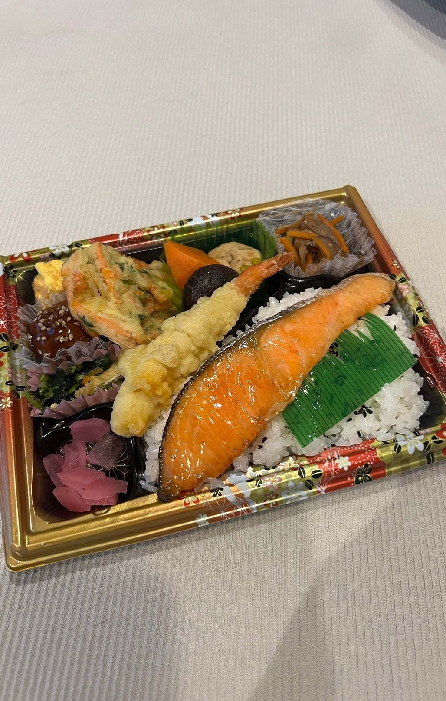

나노 공정 연어 ㄷㄷㄷㄷ

나노 공정 연어 ㄷㄷㄷㄷ
와시발 두꺼워 보이던데 ㄹㅇ 갓본의 기술력근 세계제일이 맞다
ㅅㅂ 저 정도면 단호박 슬라이스 아니냐
대패연어는 제가 최초에유
육절기를 잘못 사가지구
대패연어ㅋㅋㅋㅋ
시발아 ㅋㅋㅋㅋㅋㅋㅋㅋㅋㅋ
내가 여기 10년이상 살면서 저정도 얇은건 첨봄ㅋㅋ 도시락 용기가 융기잇!!해서 실제로 밥은 개코도 없는건 많이 봤지만
저건 안먹어봐도 졸라게 짤듯
이게 뭐야! 대팻밥처럼 말려서!
근데 저거 존나짜서 밥도둑같음
냉동상태에서 대패로 썰엇나ㅋㅋㅋ
그래야 균일한 사이즈 나올거 아냐 ㅋㅋㅋㅋㅋ
저거 존나 짜서 저정도면 딱 먹기 알맞는 짜기가 될거 같긴 함. ㅋㅋㅋㅋ
단호박인가
니무도 얇게 깎을수록 장인이라더니
연어마저 얇게 깎은구나
연어 맞냐?? 단호박 얇게 썰은건 줄 ㅋㅋㅋㅋ